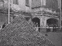

ХУДОЖЕСТВЕННЫЕ ПРОЕКТЫ
|
|---|
| ДЕДКИ В КЛЕТКЕ | Аналитики Минфина Росси |
|---|---|
После девяти лет своего сквотерского существования Пушкинская-10
превратилась в крупнейший официальный некоммерческий центр
современного искусства в Европе. Это сказалось на ее обитателях:
медицинские осмотры художников продемонстрировали переход общего
психического фона от шизоидности, которую обычно связывают
с творческими наклонностями, к определенной параноидальности.
Так, по словам координатора культурных программ Гуманитарного Фонда
Свободная Культура Мелании, художники "с опаской косятся на белые
стены новых мастерских, безо всякой видимой к тому причины или нужды
включают-выключают электричество - что получится? - или подолгу глядят
на льющуюся из крана воду".
Бросается в глаза и то, что люди, посвятившие значительную часть
своей жизни борьбе за свободу против тоталитаризма, именуемые нонконформистами и
"хранителями огня" вдруг настолько преобразили пространство своего
обитания, что оно стало напоминать одновременно психиатрическую
лечебницу строго режима, тюрьму и банковское хранилище.
Что за сокровища искусства и какие полеты вольного духа скрываются
за решетками и металлическими дверьми?
Федор Толстоевский |
связывают финансовый кризис в стране с недавней ревизией американским миллиардером- филантропом Джорджем Соросом его Центра Современного Искусства в СПб. Более всего известного мецената возмутила многофигурная аллегорическая композиция, созданная на его деньги (19тыс.$) в Летнем Саду художником Александром Флоренским, где сам Дж. Сорос был представлен в виде дойной коровы с чертами портретного сходства в окружении мелких и крупных хищников, символизировавших членов экспертного совета, делящих его деньги. ИТАР ТАСС |
| ХУДОЖЕСТВЕННАЯ ХРОНИКА | НАС СПРАШИВАЮТ | |
|---|---|---|
18 июля на Пушкинской-10 состоялось открытие АССОЦИАЦИИ ПОДДЕРЖАНИЯ ЧРЕЗВЫЧАЙНЫХ ХУДОЖЕСТВЕННЫХ ИНИЦИАТИВ (АПЧХИ) и ПЕТЕРБУРГСКОГО УНИВЕРСИТЕТА КУЛЬТУРЫ (ПУК). На открытии прозвучала лекция выдающегося московского просветителя СЕРГЕЯ АНУФРИЕВА о строении Вселенной, построенная на материалах его последних исследований сверхскоростной Диалектики Мгновенного Творчества. Следующим мероприятием АПЧХИ была первая лекция семинара по философии искусства художника, перформансиста, куратора, писателя, профессора философии СПб Университета ВАЛЕРИЯ САВЧУКА. Лектор подвел многочисленных слушателей к дискуссии о том "из чего только сделаны кураторы?". Несмотря на ряд смелых предположений, сошлись на том, что речь идет о говне. 26 сентября начнется месячник Культа Личности Т.П.Новикова - Вождя мирового Неоакадемизма. В фестивале "Образ Тимура Новикова в Изобразительном Искусстве и Кинематографе" примут участие все галереи Пушкинской-10, а так же в СПб Центре Фотоискусства откроется выставка "Тимур Новиков - Фотограф". В тот же день в клубе "Мама!" пройдет вечеринка "Любимые Песни Дедушки Русского Рейва - Тимура Новикова". К этой дате Новиков выпустил в издательстве Русского Музея собрание собственных сочинений "Новый Русский Классицизм". Редакция надеется, что самовлюбленный индюк не лопнет от важности. 5 сентября на Пушкинской-10 |
ХЕ-ХЕ-ОПС!  Таким возгласом подбадривают себя члены группы РЕЧНИКИ, сооружающие первую в городе каменную пирамиду во дворе д.1 по ул.Фурманова. Необходимые архитектурные расчеты произвел известный мечтатель Юрис Лесник. Пока высота сооружения равняется примерно 2,5м. Некоторые исследователи говорят об особых свойствах пирамид влиять на природу помещенных в них предметов и людей, а так же на окружающую среду. Экстрасенсы чувствуют присутствие пирамид за многие километры. Ближайшая пирамида более-менее приличных размеров находится примерно в 28км. к Ю., в Екатерининском парке Царского села.
В Галерее БОРЕЙ товарищество с честным названием НОВЫЕ ТУПЫЕ
представило очередной проект Музея Современного Искусства. На открытии
музея с перфомансом выступил московский акционист-неудачник Император Вава.
Предыдущей его неудачей было зашивание собственного рта при отсутствии
какой-либо фото/видео фиксации. Рокфеллеровскую премию "за литературную хватку и создание образа русского интеллигента с человеческим лицом" получила известная петербургская писательница и публицист МАРУСЯ КЛИМОВА. Премию вручил глава совета директоров попечителей Фонда сэр Д.Пинчер. Мазоховский Фонд (Вена) присудил первую премю "Золотой Захер" циклу стихов для юношества ДМИТРИЯ ВОЛЧЕКА, недавно посетившего наш городе чтениями. Этим летом на теплоходе "Славяне" прошел Первый Всероссийский съезд арт-администраторов. Несмотря на то, что в нем не смогли принять участие такие значительные фигуры из питерских администраторов и прессы, как Е. Коловская, М. Кузьмин, Э. Байкиев, И. Чечот, М. Колдобская, А. Ипполитов, Д. Пиликин, съезд укрепил смычку чиновников и журналистов в решении окончтельно взять на себя ответственность за художественный процесс. Эксперт Алла Митрофанова утверждает, что отсутствие сил, способных на референтность и самоосознание в самом искусстве, вынуждает арт-аминистраторов взвалить на себя тяжелую ношу создателей художественных ценностей. Действительно, немногие присутствовавшие на теплоходе художники и поэты выглядели скоморохами, даже неспособными развлекать публику. В тоже время, некоторые петербургские художники не способны смириться с объективными закономерностями развития искусств. Они пытаются обвинять администраторов и кураторов в антипатриотизме. "Говоря, что в нашем провинциальном городе ничего не происходит, что нет приличных художников, наши чиновники, хотят скрыть за чванством собственную некомпетентность, выслужиться перед зарубежным или московским начальством, а главное сохранить мафиозную монополию на информацию и деньги для искусства,"- заявил нам один из "патриотов". Смелость его слов явно контрастировала с нежеланием назвать свое имя. «Сусанинъ» выражает искреннее соболезнованее творческому коллективу ALT-Галереи-103 и лично Светлане Козак в связи с проведением вечеринки ВИДИМОЕНЕВИДЕО в стиле ambient mix. Партия была организована компанией "Голос Солнца" на 20 мегатон. Среди колоритных фигур выделялся странствующий проповедник Владимир Сорокин с собакой (тунгусский борзой) и прекрасная фигура Веты Померанцевой (экс-директор Порт-FM) | Приходилось много слышать об успехах петербургского искусства.
Каких художников и галереи сейчас можно назвать самыми богатыми? - До недавнего времени наиболее богатые художники Ст.Петербурга
распологались в следующем порядке: первое место - А.Флоренский
- человек не скрывающий своего благосостояния и гордящийся своим
шестисотым Мерседесом; ••• Правда ли, что чиновники от искусства ничего не понимают
в международной художественной ситуации? - Это не справедливо. Администраторы, курирующие современное искусство в нашем городе, боле одной трети своего рабочего времени проводят в зарубежных командировках. Наиболее часто ими посещаются Венецианское Биеннале, Кассельская Документа, крупные художественные события в Нью-Йорке, Лондоне, Стокгольме, Париже и Берлине. Часто арт-админнстраторы больше интересуются современным искусством, чем художники. Например международную выставку "Манифеста" в Люксембурге посетило 46 командированных петербургскими институциями администраторов и кураторов, в то время как ни один из российских художников не почтил своим участием этот престижный форум. ••• Во сколько нам обходятся хиппи? - Действительно, казалось бы хиппи ничего не стоят налогоплательщикам. Их потребительская корзина минимальна и часто формируется из даров природы: грибов, ягод, полевых трав и злаков. Тем не менее, этим летом на разгон лагеря хиппи в лесу под Лугой, силами ОМОНа с применением вертолетов и собак было истраченно 120тыс.$ из госбюджета. |
ХУДОЖЕСТВЕННЫЕ ПРОЕКТЫ
|
|---|
Сарра Блюм, Наташа Тургалей, Иван Кошимото
| ЦВЕТЫ ЗЛА | ИСКУССТВО В ЖЕЛТОМ ЦВЕТЕ | ||||||
|---|---|---|---|---|---|---|---|
|
Современное искусство задается культурным контекстом города.
В первую голову арт-критическими и кураторскими усилиями
произвести смысл из инвестируемых в пространство города
художественной энергии, эмоций и провокаций. Но каких критиков
имеем мы? Одни безнадежно устарели, другие же — помоложе — высказаться
не имеют возможности. И где им в Питере быть, где, скажите,
отслеживать актуальный процесс? в буклетах? в любимом членами кабинета
"Кабинете"? в редко проявляющей себя "Художественной воле"? или в "Максимке"
в коротких штанишках? Один только и есть приличный орган "На дне".
Слава энтузиасту Пиликину. Другое дело журналисты от искусства,
гарантированные аккредитацией на внимание публики. Возьмем, к примеру,
ведущего художественного критика и уважаемого журналиста Михаила Кузьмина.
Его кредо выудил вкрадчивый Алексей Варсопко: "Я сознательно пишу для читателей,
которые могут в галереи, на выставки не ходить...я не ставлю такой задачи,
что, прочитав статью, читатель захотел бы пойти на выставку..."
Поэтому наверно на старушек ориентированы его фразы в "Смене" (2авг. 98):
"...голые, да как же можно, здесь ведь дети ходят...". О такой цензуре
не мечтали даже коммунисты. Тон и реплики, которые он себе позволяет
допустимы для... (трудно и адресата подобрать) примитивного или ориентированного
на обыденное проживание читателя, но не для молодежной "Смены".
Те, кто на выставки все еще ходит, нашего критика и не читают, так как трудно
все же увидеть монастыри глазами баталиста: картина на выставке "Русские монастыри"
в Русском музее принадлежит кисти В.П.Верещагина, а не русскому передвижнику
В.В.Верещагину, — плохо, тов. журналист, ратующий за чистоту языка и высокую культуру,
демонстрировать необразованность. Да и не красиво ведь перед поклонниками,
хотя и в соответствии с желаемым: "Хочется мистифицировать и влиять...
Если он — идеальный мой читатель, то он смотрит на все моими глазами". Кузьмин, впрочем, не худший журналист в этой газете. Назвавшийся Евгением Митиным (стыдно, поди, честно подписываться — рыльце в пушку), переписал текст художника В. Савчука, висевший в Манеже на фестивале "Экспериментального искусства и перформанса". У самого видно мозгов не хватило сказать что-то внятное. Добавил вводные слова и знаки — своего отношения свысока. Небось, деньги получил за списанное. А Права автора? Копирайт? Это все — не про них газетчиков. Они самодовольны и безнаказанны: они могут всех и вся облить, а ответ напечатать — кишка тонка. Ворон ворону... (Разве что рискнет друг молодежи Хлобыстин опубликовать в своей "ХВ".) Случай, повторим, типичный. Ощущение, перерастающее в убеждение, от чтения их текстов такое, что умственное усилие им вредно. Их главный прием — взять текст художника или куратора, пересказать слово в слово, добавив "он де" и выдать за свой. Плагиат? Да что вы. Они так работают, так презентируют, так получают деньги за чужой труд. При всем при том презирают то, что не понимают. Так в газете "Пятница" (27-31 июля 98 г.) в заметке, посвященной единственному в России фестивалю "Экспериментального искусства и перформанса", полностью переписанной из статьи каталога, умудрились переврать фамилию ее автора — Ларисы Скобкиной — (бессознательно что ли, заметали следы). Заметка не подписана. Но журналист деньги за нее получил/а? опять же. И это повсеместно. Высказаться кураторам, арт-критикам, художникам возможности не дают, иначе журналисты остались бы без работы. С фестивалем особая ситуация, полностью выдающая провинциальное самоощущение и второсортность пишущих. Ведь приехали же известные отечественные и зарубежные перформансисты, художники, профессора, преподаватели, арт-критики и теоретики искусства. Если бы фестиваль был в Москве, то были бы, не в пример нынешним, заинтересованные и подробные пересказы, "известия из центра", отчеты о командировках, интервью с московскими кураторами и критиками, наворованные и надерганные компиляции их мнений — благо преклоняться и компилировать журналисты умеют здорово. Свой же городской фестиваль сделать событием, подать как уникальный экперимент в городе, который имеет мощную традицию авангарда, требует труда, риска, ведь могут не так понять домохозяйки, начальство, поклонники. Вот выставка фаллоимитаторов и технических приспособлений для секса — дело святое. И освещать легко. Журналист отличается от жеманной дамочки, поджимающей губки при виде Ню или, упаси бог, голого артиста, тем, что он современник, чувствует современность ("современность, — по М.Фуко, — это не чувство быстротечности жизни, это воля к героизации жизненного мгновения") и, простите за непомерное требование, (размышляет о происходящем в актуальном искусстве. Сделать значимым художественное явление, дать ему точную оценку, увидеть новое и распознать подлинное, понимаем, задача трудная, творческая. Презирать и потворствовать примитивному вкусу проще. И история их не учит. Сколько таких критиков и охранителей общественной нравственности оказались в луже. Ругать же, культивировать второсортность и провинциальность, да еще и "выглядеть" в глазах своих поклонников умниками, — похоже, главная функция газетчиков от искусства в сегодняшней питерской ситуации. Они дарят возможность "ленивому и необразованному человеку — и не любопытному как иначе — чувствовать себя комфортно. Последний все понимает, над всем ехидничает и на выставки, благодаря репортажам Кузьмина и К не ходит. Хлопнет стакан и к ТВ, — Спасибо Вам, Мишенька и Зиночка Арсеньева. Но нас не обманешь. |
| УГОЛОК ФИЛОСОФА |
|---|
Андрей Вялый
ВВЕДЕНИЕ В РЕГИОНАЛЬНУЮ ТАНАТОЛОГИЮ
Необходим внутренний опыт. А генетив последнего все же
топологически ясен. Философская мастерская. Мастерская
Платона. Здесь что-то завязывается. Здесь чистота подачи,
не требующая ответных слов. Ветер Ничто. Что толку
говорить о нем. Важен сам ветер. Между тем, безветрие.
Ветер-векторизованное перемещение воздуха из зоны высокого
давления и зону пониженного давления (или наоборот, не помню).
Современная культура, конечно, условно, представляет собой
более или менее равномерно распределенное "атмосферное"
давление по всей территории охвата. Или отсутствие
давления. Выдавливание. Мы научились обезвреживать
сильные идеи, мы овладели оружием тотальной иронии - этим
безотказным тучеразгоняющем устройством. Мы стали
неуязвимы, не схвачиваемы, не увлекаемыми ветром. Но
"гораздо трудней не свихнуться от скуки..." Впрочем,
свихнуться сегодня - то, что нужно.
Шизофрения или паранойя в определенной эстетизированной подаче
(взять хотя бы питерскую арт-группу "Новые тупые")
стала привилегированной формой ответа на дефицит влияний.
Остается только сквознячок Ничто. Он всегда в запасе.
Смерть как последнее средство философии - ее общее место.
Но все же место. Философия, из последних сил пытающаяся
сохранить уместность в культуре, ведя трудные арьергардные
бои за территории (некогда необъятные и подконтрольные с
высот методологически безупречной методологии) с
неизбежностью реанимирует вечную тему.
На вопрос "почему мы продолжаем говорить и писать об
этом? или: почему тантология бессмертна?" теперь есть ответ
и духе Камю: таков удел философии.
Теперь "говорить и писать". Амбивалентность смерти.
Мой внутренний опыт. Говорить - владеть... В конечном
счете дисквалифицировать саму смерть. Смерть - артефакт.
Символический обмен.
Писать - открывать скважину смерти. Быть выставляемым ей. Чуять Ничто.
Не владеть, а исполняться. Умирать в книге. Мастерская Платона - место
умирания и переживания смерти как нехватки. Нехватка книги и нехватка
смерти коррелируют. И то и другое, собственно, и есть жизнь. Философская
мастерская - сгущение намерений.
Различие говорения и письма смерти функционально...
Фигура танатолога амбивалентна. Танатолог стягивает полюса.
Публичное слово о смерти может быть (героичным...) Сейчас я вам расскажу.
Слушайте сюда. Подойдите поближе. Сейчас вы поймете...Но всегда уловка
или в лучшем случае "китч смерти". Кстати, действительно, в лучшем случае,
ибо в китче содержится первичная ситуация подозрения по отношению
к романтической возвышенности смыслообразующей функции смерти.
Тем самым, китч смерти - своеобразная биополитика или ее парадоксальная модуляция,
первичная расфокусировка некроцентричной романтической
традиции. Своеобразная виталогическая стратегия. Но все-
таки обман, происходящий из общей логоцентричной
установки устного слова, ибо публичная речь - следование
череды доводов. Некроволновая речь может быть только
поэтической (т.е. письменной по происхождению, как
правило). Позитивная речь о смерти невозможна, как
невозможна она сама. Мы не можем владеть тем, что владеет
нами. Проблема исчезает. Нет проблемы, как произнес декан
философского факультета на одной защите. Мудак.
В письме другое дело. Здесь резко снижается функция контроля
(если это не подготовка (скрытая или явная) речи - редки,
хотя и бывают случаи совпадения (морфологического,
ритмического и т.д.) письменного слова и устного). Что
приводит к радикальному сближению-слипанию
интенсивности письма и смерти. Происходит адекватное
распределение функций: смерть владеет мною в письме, я
отдаюсь письму, презентирующему смерть. Гармоническое
соитие. Эрос письма. По взаимному согласию. Философ в
мастерской (кабинете) - месте работы - пребывает в огне
возбуждения, заступает, боится пропустить малейшее
телодвижение письма, ибо к утру письмо остывает. Смерть
уходит в нехватку.
Это различие (письма и речи смерти) мне показалось важным,
ибо разъяснило еще один источник скепсиса и иронии но отношению
к танатологии... Оказывается о смерти говорить не только не принято,
неприлично, но это, по большому счету, невозможно. А если возможно,
то только дисквалифицирующим образом, подобно тому, как некросюжетика,
доминирующая в современной маскультуре, не актуализирует, а напротив,
дезавуирует реальность смерти. Бодрийяровское: "сегодня нормально быть мертвым"
я бы развил до "сегодня невозможно быть мертвым". В страхе обнаружимы два
полюса-источника: с одной стороны - ничто, пустота,безответственность,
с другой стороны - переполненность, темнота, бессонница. Само слово "страх",
кстати, происходит от "тесноты", "теснины". Оба полюса смыкаются в однородности,
угрожающей жизнетворной множественности. Страх безразличия. Но ведь также и
с бесконечным различием. Тоже ведь страшно. Страх в обе стороны.
"Различие и повторение" (Ж.Делез). Страх вызываем либо сильным различием
(до неузнаваемости, в пределе - смертью), либо сильным повторением
(в пределе - бессмертием). Пожалуй, все же, ничто где нет ни различия, ни повторения.
Ничто можно нейтрализовать лишь повторным различием. Бесстрашием.
Некрореализм переводит смерть из всеобщей реальности закона в более
глубокую художественную реальность. "Жизнь сообща должна держаться на
высоте смерти. Удел большинства частных жизней - незначительность.
Но любое сообщество способно существовать только на высоте гибельной
напряженности, оно распадается, как только перестает постигать особое
величие смертельной опасности". (Жорж Батай). Или еще его же:
" В замкнутости отчаянья испытывать медленное удовлетворение,
решительную неукоснительность, быть твердым, стать скорее гарантом смерти,
нежели ее жертвой". Медленное удовлетворение. Все еще будет. Все только начинается.
Не спеши. Вот только на что ей еще наши гарантии? Чего они стоят?
Региональная танатология скрадывает безупречность формальной своими
естественнофактурными подробностями, своей провинциальной повадкой
валоризации незначительного, обыденного, мелкозернистого.
Петербургская и финская танатологии дружны и близки, думаю, именно,
в силу неформальности, неакадемичности и задиристости.
| ЗАРАЗУМ! |
|---|